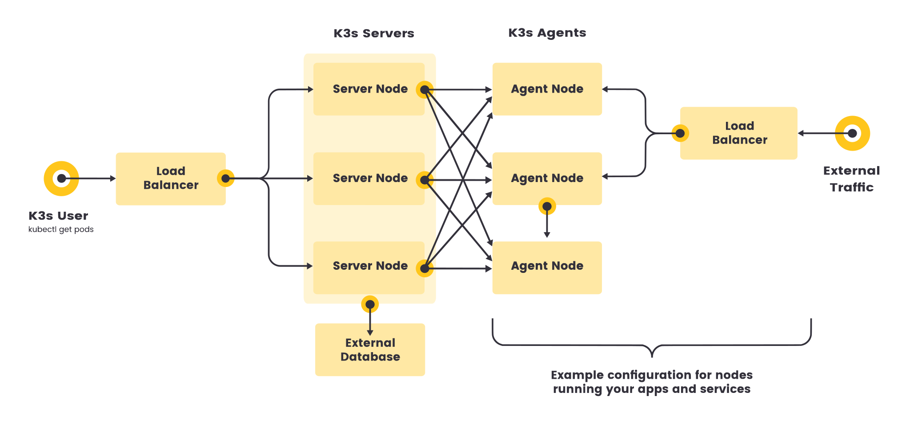

Architecture
Servers and Agents
-
A server node is defined as a host running the
k3s servercommand, with control-plane and datastore components managed by K3s. -
An agent node is defined as a host running the
k3s agentcommand, without any datastore or control-plane components. -
Both servers and agents run the kubelet, container runtime, and CNI. See the Advanced Options documentation for more information on running agentless servers.

Single-server Setup with an Embedded DB
The following diagram shows an example of a cluster that has a single-node K3s server with an embedded SQLite database.
In this configuration, each agent node is registered to the same server node. A K3s user can manipulate Kubernetes resources by calling the K3s API on the server node.

High-Availability K3s
Single server clusters can meet a variety of use cases, but for environments where uptime of the Kubernetes control plane is critical, you can run K3s in an HA configuration. An HA K3s cluster comprises:
-
Embedded DB
-
External DB
-
Three or more server nodes that will serve the Kubernetes API and run other control plane services
-
An embedded etcd datastore (as opposed to the embedded SQLite datastore used in single-server setups)

-
Two or more server nodes that will serve the Kubernetes API and run other control plane services
-
An external datastore (such as MySQL, PostgreSQL, or etcd)

Fixed Registration Address for Agent Nodes
In the high-availability server configuration, each node can also register with the Kubernetes API by using a fixed registration address, as shown in the diagram below.
After registration, the agent nodes establish a connection directly to one of the server nodes.

How Agent Node Registration Works
Agent nodes are registered with a websocket connection initiated by the k3s agent process, and the connection is maintained by a client-side load balancer running as part of the agent process. Initially, the agent connects to the supervisor (and kube-apiserver) via the local load-balancer on port 6443. The load-balancer maintains a list of available endpoints to connect to. The default (and initially only) endpoint is seeded by the hostname from the --server address. Once it connects to the cluster, the agent retrieves a list of kube-apiserver addresses from the Kubernetes service endpoint list in the default namespace. Those endpoints are added to the load balancer, which then maintains stable connections to all servers in the cluster, providing a connection to the kube-apiserver that tolerates outages of individual servers.
Agents will register with the server using the node cluster secret along with a randomly generated password for the node, stored at /etc/rancher/node/password. The server will store the passwords for individual nodes as Kubernetes secrets, and any subsequent attempts must use the same password. Node password secrets are stored in the kube-system namespace with names using the template <host>.node-password.k3s. This is done to protect the integrity of node IDs.
If the /etc/rancher/node directory of an agent is removed, or you wish to rejoin a node using an existing name, the node should be deleted from the cluster. This will clean up both the old node entry, and the node password secret, and allow the node to (re)join the cluster.
If you frequently reuse hostnames, but are unable to remove the node password secrets, a unique node ID can be automatically appended to the hostname by launching K3s servers or agents using the --with-node-id flag. When enabled, the node ID is also stored in /etc/rancher/node/.